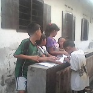

Pelajaran Mengarang

| No. | Kriteria | Identitas |
| 1 | Judul | Pelajaran Mengarang |
| 2 | Pengarang | BeritaHarian Kompas |
| 3 | Jumlah Kata | >1334 Kata |
| 4 | Bahasa | Indonesia |
| 4 | Tahun | 2017 |
Pelajaran mengarang sudah dimulai.
Kalian punya waktu 60 menit”, ujar Ibu Guru Tati.
Anak-anak kelas V menulis dengan kepala hampir menyentuh meja. Ibu Guru Tati menawarkan tiga judul yang ditulisnya di papan putih. Judul pertama “Keluarga Kami yang Berbahagia”. Judul kedua “Liburan ke Rumah Nenek”. Judul ketiga “Ibu”.
Ibu Guru Tati memandang anak-anak manis yang menulis dengan kening berkerut. Terdengar gesekan halus pada pena kertas. Anak-anak itu sedang tenggelam ke dalam dunianya, pikir Ibu Guru Tati. Dari balik kaca-matanya yang tebal, Ibu Guru Tati memandang 40 anak yang manis, yang masa depannya masih panjang, yang belum tahu kelak akan mengalami nasib macam apa.
Sepuluh menit segera berlalu. Tapi Sandra, 10 Tahun, belum menulis sepatah kata pun di kertasnya. Ia memandang keluar jendela. Ada dahan bergetar ditiup angin kencang. Ingin rasanya ia lari keluar dari kelas, meninggalkan kenyataan yang sedang bermain di kepalanya. Kenyataan yang terpaksa diingatnya, karena Ibu Guru Tati menyuruhnya berpikir tentang “Keluarga Kami yang Berbahagia”, “Liburan ke Rumah Nenek”, “Ibu”. Sandra memandang Ibu Guru Tati dengan benci.
Setiap kali tiba saatnya pelajaran mengarang, Sandra selalu merasa mendapat kesulitan besar, karena ia harus betul-betul mengarang. Ia tidak bisa bercerita apa adanya seperti anak-anak yang lain. Untuk judul apapaun yang ditawarkan Ibu Guru Tati, anak-anak sekelasnya tinggal menuliskan kenyataan yang mereka alami. Tapi, Sandra tidak, Sandra harus mengarang. Dan kini Sandra mendapat pilihan yang semuanya tidak menyenangkan.
Ketika berpikir tentang “Keluarga Kami yang Berbahagia”, Sandra hanya mendapatkan gambaran sebuah rumah yang berantakan. Botol-botol dan kaleng-kaleng minuman yang kosong berserakan di meja, di lantai, bahkan sampai ke atas tempat tidur. Tumpahan bir berceceran diatas kasur yang spreinya terseret entah ke mana. Bantal-bantal tak bersarung. Pintu yang tak pernah tertutup dan sejumlah manusia yang terus menerus mendengkur, bahkan ketika Sandra pulang dari sekolah.
“Lewat belakang, anak jadah, jangan ganggu tamu Mama,” ujar sebuah suara dalam ingatannya, yang ingin selalu dilupakannya.
***
Lima belas menit telah berlalu. Sandra tak mengerti apa yang harus dibayangkanya tentang sebuah keluarga yang berbahagia.
“Mama, apakah Sandra punya Papa?”
“Tentu saja punya, Anak Setan! Tapi, tidak jelas siapa! Dan kalau jelas siapa belum tentu ia mau jadi Papa kamu! Jelas? Belajarlah untuk hidup tanpa seorang Papa! Taik Kucing dengan Papa!”
Apakah Sandra harus berterus terang? Tidak, ia harus mengarang. Namun ia tak punya gambaran tentang sesuatu yang pantas ditulisnya.
Dua puluh menit berlalu. Ibu Guru Tati mondar-mandir di depan kelas. Sandra mencoba berpikir tentang sesuatu yang mirip dengan “Liburan ke Rumah Nenek” dan yang masuk kedalam benaknya adalah gambar seorang wanita yang sedang berdandan dimuka cermin. Seorang wanita dengan wajah penuh kerut yang merias dirinya dengan sapuan warna yang serba tebal. Merah itu sangat tebal pada pipinya. Hitam itu sangat tebal pada alisnya. Dan wangi itu sangat memabukkan Sandra.
“Jangan Rewel Anak Setan! Nanti kamu kuajak ke tempatku kerja, tapi awas, ya? Kamu tidak usah ceritakan apa yang kamu lihat pada siapa-siapa, ngerti? Awas!”
Wanita itu sudah tua dan menyebalkan. Sandra tak pernah tahu siapa dia. Ibunya memang memanggilnya Mami. Tapi semua orang didengarnya memanggil dia Mami juga. Apakah anaknya begitu banyak? Ibunya sering menitipkan Sandra pada Mami itu kalau keluar kota berhari-hari entah ke mana.
Di tempat kerja wanita itu, meskipun gelap, Sandra melihat banyak orang dewasa berpeluk-pelukan sampai lengket. Sandra juga mendengar musik yang keras, tapi Mami itu melarangnya nonton.
“Anak siapa itu?”
“Marti.”
“Bapaknya?”
“Mana aku tahu!”
Sampai sekarang Sandra tidak mengerti. Mengapa ada sejumlah wanita duduk diruangan kaca ditonton sejumlah lelaki yang menujuk-nunjuk mereka.
“Anak kecil kok dibawa kesini, sih?”
“Ini titipan si Marti. Aku tidak mungkin meninggalkannya sendirian dirumah. Diperkosa orang malah repot nanti.”
Sandra masih memandang keluar jendela. Ada langit biru diluar sana. Seekor burung terbang dengan kepakan sayap yang anggun.
***
Tiga puluh menit lewat tanpa permisi. Sandra mencoba berpikir tentang “Ibu”. Apakah ia akan menulis tentang ibunya? Sandra melihat seorang wanita yang cantik. Seorang wanita yang selalu merokok, selalu bangun siang, yang kalau makan selalu pakai tangan dan kaki kanannya selalu naik keatas kursi.
Apakah wanita itu Ibuku? Ia pernah terbangun malam-malam dan melihat wanita itu menangis sendirian.
“Mama, mama, kenapa menangis, Mama?”
Wanita itu tidak menjawab, ia hanya menangis, sambil memeluk Sandra. Sampai sekarang Sandra masih mengingat kejadian itu, namun ia tak pernah bertanya-tanya lagi. Sandra tahu, setiap pertanyaan hanya akan dijawab dengan “Diam, Anak Setan!” atau “Bukan urusanmu, Anak Jadah” atau “Sudah untung kamu ku kasih makan dan ku sekolahkan baik-baik. Jangan cerewet kamu, Anak Sialan!”
Suatu malam wanita itu pulang merangkak-rangkak karena mabuk. Di ruang depan ia muntah-muntah dan tergelatak tidak bisa bangun lagi. Sandra mengepel muntahan-muntahan itu tanpa bertanya-tanya. Wanita yang dikenalnya sebagai ibunya itu sudah biasa pulang dalam keadaan mabuk.
“Mama kerja apa, sih?”
Sandra tak pernah lupa, betapa banyaknya kata-kata makian dalam sebuah bahasa yang bisa dilontarkan padanya karena pertanyaan seperti itu.
Tentu, tentu Sandra tahu wanita itu mencintainya. Setiap hari minggu wanita itu mengajaknya jalan-jalan ke plaza ini atau ke plaza itu. Di sana Sandra bisa mendapat boneka, baju, es krim, kentang goreng, dan ayam goreng. Dan setiap kali makan wanita itu selalu menatapnya dengan penuh cinta dan seprti tidak puas-puasnya. Wanita itu selalu melap mulut Sandra yang belepotan es krim sambil berbisik, “Sandra, Sandra …”
Kadang-kadang, sebelum tidur wanita itu membacakan sebuah cerita dari sebuah buku berbahasa inggris dengan gambar-gambar berwarna. Selesai membacakan cerita wanita itu akan mencium Sandra dan selalu memintanya berjanji menjadi anak baik-baik.
“Berjanjilah pada Mama, kamu akan jadi wanita baik-baik, Sandra.”
“Seperti Mama?”
“Bukan, bukan seperti Mama. Jangan seperti Mama.”
Sandra selalu belajar untuk menepati janjinya dan ia memang menjadi anak yang patuh. Namun wanita itu tak selalu berperilaku manis begitu. Sandra lebih sering melihatnya dalam tingkah laku yang lain. Maka, berkelebatan di benak Sandra bibir merah yang terus menerus mengeluaran asap, mulut yang selalu berbau minuman keras, mata yang kuyu, wajah yang pucat, dan pager …
Tentu saja Sandra selalu ingat apa yang tertulis dalam pager ibunya. Setiap kali pager itu berbunyi, kalau sedang merias diri dimuka cermin, wanita itu selalu meminta Sandra memencet tombol dan membacakannya.
DITUNGGU DI MANDARIN
KAMAR: 505, PKL 20.00
Sandra tahu, setiap kali pager ini menyebut nama hotel, nomor kamar, dan sebuah jam pertemuan, ibunya akan pulang terlambat. Kadang-kadang malah tidak pulang sampai dua atau tiga hari. Kalau sudah begitu Sandra akan merasa sangat merindukan wanita itu. Tapi, begitulah , ia sudah belajar untuk tidak pernah mengungkapkanya.
***
Empat puluh menit lewat sudah.
“Yang sudah selesai boleh dikumpulkan,” kata Ibu guru Tati.
Belum ada secoret kata pun di kertas Sandra. Masih putih, bersih, tanpa setitik pun noda. Beberapa anak yang sampai hari itu belum mempunyai persoalan yang teralalu berarti dalam hidupnya menulis dengan lancar. Bebarapa diantaranya sudah selesai dan setelah menyerahkannya segera berlari keluar kelas.
Sandra belum tahu judul apa yang harus ditulisnya.
“Kertasmu masih kosong, Sandra?” Ibu Guru Tati tiba-tiba bertanya.
Sandra tidak menjawab. Ia mulai menulis judulnya: Ibu. Tapi, begitu Ibu Guru Tati pergi, ia melamun lagi. Mama, Mama, bisiknya dalam hati. Bahkan dalam hati pun Sandra telah terbiasa hanya berbisik.
Ia juga hanya berbisik malam itu, ketika terbangun karena dipindahkan ke kolong ranjang. Wanita itu barangkali mengira ia masih tidur. Wanita itu barangkali mengira, karena masih tidur maka Sandra tak akan pernah mendengar suara lenguhnya yang panjang maupun yang pendek di atas ranjang. Wanita itu juga tak mengira bahwa Sandra masih terbangun ketika dirinya terkapar tanpa daya dan lelaki yang memeluknya sudah mendengkur keras sekali. Wanita itu tak mendengar lagi ketika dikolong ranjang Sandra berbisik tertahan-tahan “Mama, mama …” dan pipinya basah oleh air mata.
“Waktu habis, kumpulkan semua ke depan,” ujar Ibu Guru Tati.
Semua anak berdiri dan menumpuk karanganya di meja guru. Sandra menyelipkan kertas di tengah.
Di rumahnya, sambil nonton RCTI, Ibu Guru Tati yang belum berkeluarga memeriksa pekerjaan murid-muridnya. Setelah membaca separo dari tumpukan karangan itu, Ibu guru Tati berkesimpulan, murid-muridnya mengalami masa kanak-kanak yang indah.
Ia memang belum sampai pada karangan Sandra, yang hanya berisi kalimat sepotong:
Ibuku seorang pelacur…